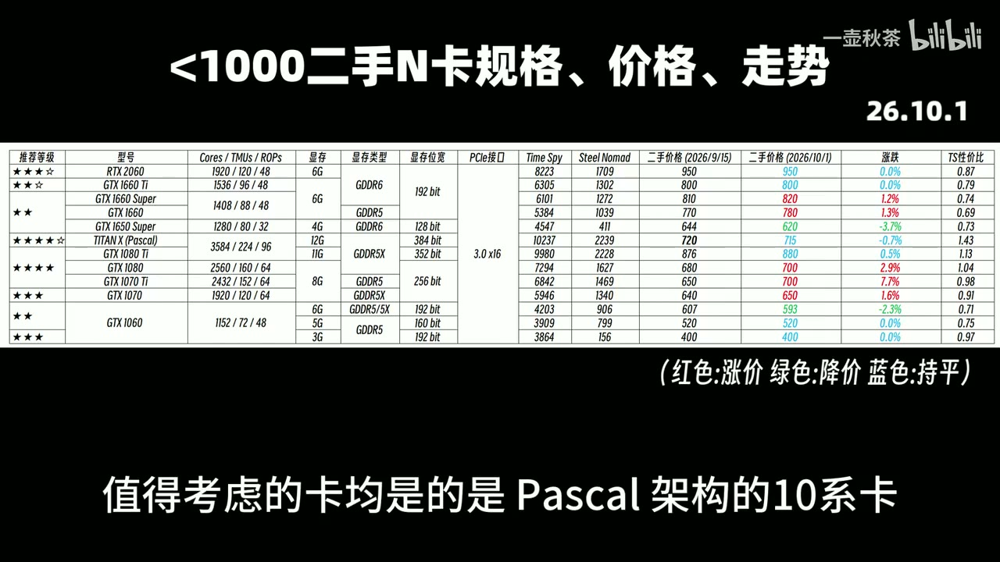

原视频 · 在线回看
点击后联网加载 B 站播放器；本地不下载整段视频。

原视频 · 在线回看
点击后联网加载 B 站播放器；本地不下载整段视频。
原视频标题：26年10月市售全型号二手显卡走势分析与推荐
上传者：一壶秋茶
时长：10:18
来源：Bilibili 视频页
总结强度：standard
这份整理要回答两个问题：过去半个月二手显卡价格怎么变了，原先的推荐等级要不要跟着改。价格数据取自二手平台的七日平均成交价，统计日是 2026 年 10 月 1 日；文中的涨跌、型号排名和购买倾向都属于这次录制时的回顾，不能当成现在的报价或采购建议。
主讲先把型号分组，避免同一显卡的少量变体把整体数字搅乱。合并小变种后，N 卡统计为 62 款：17 款七日均价波动不到 1%，7 款降幅超过 1%，其余 38 款都涨了 1% 以上，平均涨幅 4.4%。换句话说，当时多数常见 N 卡在涨价，价格稳定或下降的只占较小部分。
A 卡则按 RDNA 与更早的 GCN 架构分开观察。5000 至 7000 系 RDNA 型号共 36 款，约三分之一价格波动不到 1%，4 款略有下降，其余上涨，平均涨幅为 4.6%。GCN 老卡里，几张 Vega 卡相对稳定，Radeon VII 小幅下降；北极星架构旧卡的成交价大多走低。主讲把后者列为不推荐，理由包括矿卡来源与售价，说明“价格低”本身不能代表合算。
Intel Arc 当时也呈现涨价为主的走势，A750、A770 的部分型号价格持平；主讲提到 B570 与 A580 值得留意。矿卡和计算卡整体也在涨价，不过这类卡是否适合普通游戏用途，还要看具体型号与使用状况。上述分组反映的是他统计到的成交情况，并不能说明所有卖家、所有成色的卡都按同一价格交易。
这套等级是主讲按二手价格、传统光栅性能、光线追踪、显存容量和超分辨率、帧生成等技术支持综合评定的主观筛选结果。他参考 3DMark 官网的平均显卡分数，并用价格换算出简单的性价比得分；这个分数适合先缩小比较范围，不能代替实际游戏和软件表现。中低端卡主要看 Time Spy；如果目标是 4K 游戏，他建议把显卡测试成绩也纳入比较，光追需求则要额外看光追测试项目。
即使两张卡跑分接近，使用体验也可能因显存、功耗、光追性能和技术支持而不同；同型号二手卡还会因保修、维修或挖矿经历而有不同风险。因此，这里逐价位的等级是当时的比较意见。它能说明主讲如何权衡取舍，不能替某一张具体二手卡做成色检查或售后确认。
千元内的 N 卡推荐里，Titan X 因单看性价比被主讲列为这一档的高分选择，但这个系列有不同架构的版本，部分卡来自挖矿、计算用途或改造，实际状态差异很大。主讲提醒新手谨慎；他提到可以向老店购买加价延保，这只是他提出的一种处理方式，延保范围和售后能否兑现仍取决于具体卖家与条款。对不想承担老卡故障风险的人，他倾向于选择较新的非矿型号。
统计表把这些旧卡的规格、跑分和两个日期的二手价格并排列出：GTX 1060 3GB 在 2026 年 10 月 1 日列价 400 元，6GB 列价 593 元；Titan X Pascal 列价 715 元。它们是该次行情表中的历史价格，可以看出同系列不同显存版本与不同型号的价差。
只玩《英雄联盟》或较老的 2D 游戏时，他提到 GTX 1060 3GB 作为低价选项，并认为其显存容量小，挖矿需求相对有限。这个推断不足以确认某一张卡是否挖过矿；6GB 版本或其他型号也不能仅凭显存容量判断成色。A 卡方面，Vega 56 被列为当时千元档较有性价比的型号；Radeon VII 有一部分由 MI50 改造而来，主讲同样提醒新手别只看跑分。RX 5700 XT 的温度表现被他说成需要留意，并建议降频使用。
一千至两千元档里，主讲把 RTX 2070 与 2070 Super 放在相近的推荐等级，认为 RTX 2080 几款虽有涨价，性价比仍可考虑。Radeon RX 6800 XT 因价格跨过两千元，被移出这一档；RX 6800 的等级维持不变。Intel Arc B580 当时接近两千元，推荐等级因此下调；B570 价格较稳定。这里等级变化跟着成交价变化，单看型号名无法复原那次价格差异。
两千至三千元档，主讲指出 N 卡在单纯 3DMark 跑分上弱于同档 A 卡，但他给两边相近等级时，还考虑了技术支持。对照表记载 RTX 3080 10GB 在 2026 年 9 月 15 日为 2200 元，到 10 月 1 日为 2350 元，涨幅 6.8%；12GB 版本在 10 月 1 日列价 2900 元。A 卡中，RX 9060 XT 8GB 当时列价 2399 元，RTX 5060 列价 2850 元，价差约 451 元；RX 7800 XT 16GB 列价 2950 元，价格已接近这档上限。
同样在这一档，RX 7700 XT 被认为与 RX 9060 XT 8GB 性能相近，额外显存是它的主要优势之一；主讲仍偏向后者，因为其当时价格和保修状态更有利。对 RX 6800 XT、RX 6900 XT、RX 6950 XT 等较老高端卡，他提醒高跑分之外还要考虑核心故障风险、功耗和矿卡经历，并表示若考虑这一类卡，只偏向较新的 RX 6800 XT。性能数字能说明显卡快慢，不能单独说明二手卡还剩多少寿命。
三千至四千元档里，RTX 4060 Ti 16GB 被提作本地部署入门兼顾游戏的备选；N 卡阵营中 RTX 3080 Ti 的相对性价比受到肯定，同时矿卡风险影响了推荐等级。A 卡方面，RX 9070 系卡被描述为适合 2K 游戏，光追表现逊于对比的 RTX 4070 Super，但价格更低且主讲统计到的型号仍在保修期内。保修期限和覆盖范围要落到具体卡与购买凭据上，不能把系列层面的概述直接套到某个卖家商品。
四千至五千元档，RTX 4070 Super 被主讲视为当时较均衡的 2K 选择；RTX 4070 Ti 贵出的性能在他看来不足以让游戏体验跨到 4K，不过对编码需求可能仍有价值。高价的 RTX 4080 和 4080 Super 因涨幅较大而下调等级；RX 9070 XT 与 RX 7900 XTX 则被列为该档的 A 卡选择。主讲用当时的二手价对比 RX 9070 XT 与 RTX 5070、RTX 5070 Ti，强调价差可能大于他认为的技术差异；这是他的价格与产品判断，适用时间限于这次统计。
更高端的 RX 7900 XTX 有 24GB 显存，主讲认为在能用到大显存的 AI 任务里具备价值；对主要玩游戏的人，他更看重 RX 9070 XT 的整体选择。这个例子说明用途会改变比较重点：游戏、编码和本地 AI 对显卡的要求不同，单一跑分或“性价比”分数很难替所有用途排出同一个顺序。
这次行情回顾以 2026 年 10 月 1 日的七日成交均价为基准，N 卡和较新的 RDNA A 卡当时普遍涨价。推荐等级把价格、性能、显存、功耗、技术支持和二手风险放在一起考虑。历史平均价与主观等级适合了解当时的判断过程；具体二手卡还需单独核对成色、保修、来源和售后条件。